Vedere non è riconoscere:
il ruolo della struttura percettiva
La percezione architettonica non coincide con il riconoscimento degli oggetti. Dove l’occhio abitualmente vede porte, finestre e arredi, lo sguardo progettuale individua tensioni, assi, ritmi, direzioni, vuoti e pieni. L’architetto allena la visione a cogliere strutture relazionali, non funzioni o usi. Le immagini selezionate rendono visibile il passaggio dalla lettura convenzionale dello spazio alla sua comprensione percettiva e costruttiva.
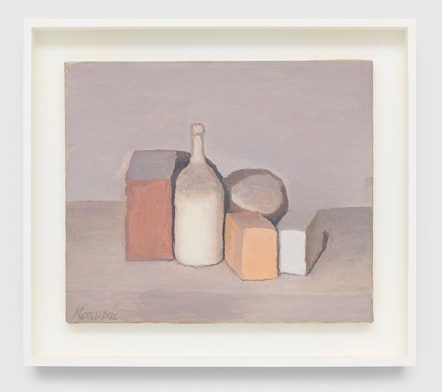
La Natura morta (Still Life) di Giorgio Morandi del 1955 è un’opera realizzata con la tecnica dell’olio su tela e si trova in una collezione privata. Morandi era noto per la sua dedizione ossessiva a un numero limitato di soggetti, principalmente bottiglie, vasi e oggetti domestici, che trasformava in composizioni senza tempo. Le sue opere del dopoguerra, come questa del 1955, sono caratterizzate da:
- Toni smorzati: Morandi utilizzava una tavolozza di colori sottili e silenziosi, con una forte enfasi sul tono e sulla luce.
- Composizione essenziale: Gli oggetti sono spesso disposti in file serrate o raggruppamenti semplici, spogliati della loro funzione pratica per essere analizzati nella loro pura essenza formale.
- Qualità meditativa: L’artista mirava a evocare una sensazione di quiete e contemplazione, creando opere che riflettevano la sua vita ritirata e il suo rifiuto del tumulto della vita moderna.
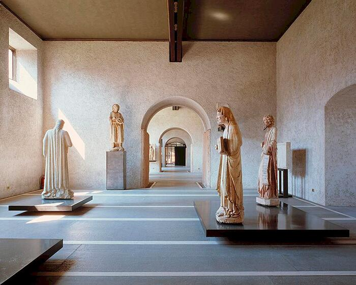
- ogni oggetto è collocato per definire un campo percettivo,
- la composizione è fatta di vuoti, direzioni, tagli di luce,
- la percezione governa l’esperienza più della funzione.
L'allestimento museale del Castelvecchio a Verona, curato da Carlo Scarpa tra il 1956 e il 1964 (con lavori fino al 1974), è un esempio iconico di museografia moderna, noto per la sua sintesi magistrale di restauro e design. L'intervento di Scarpa è caratterizzato da un dialogo costante tra l'architettura medievale preesistente e gli innesti contemporanei, valorizzando sia il contenitore storico che le opere d'arte esposte.
Caratteristiche principali dell'allestimento:
- Dialogo tra vecchio e nuovo: Scarpa ha intenzionalmente affiancato la pietra antica del castello con materiali moderni come il cemento a vista, il legno, il metallo e il vetro, creando un contrasto visivo che enfatizza la storia di entrambi gli elementi.
- Percorso espositivo dinamico: Il percorso è attentamente studiato per guidare il visitatore attraverso 29 sale e settori (scultura, pittura, armi, ecc.), offrendo prospettive e punti di vista inaspettati sulle opere e sull'architettura, inclusa una vista strategica sull'Adige.
- Dettagli esecutivi e supporti: Grande attenzione è posta ai dettagli, come i supporti per le opere d'arte, che sono spesso disegnati su misura. Le opere pittoriche, ad esempio, sono inserite in sottili cornici a "cassetta" per esaltarne le qualità, mentre le sculture sono posizionate su basi o sospese con sistemi ingegnosi che le distaccano dalle pareti.
- Luce naturale e artificiale: L'uso sapiente della luce è fondamentale. Scarpa calibra l'illuminazione naturale attraverso finestre e aperture per creare effetti drammatici, integrandola con luce artificiale per evidenziare specifiche opere.
- Integrazione con il contesto: L'allestimento non si limita agli interni, ma si estende al restauro dell'intero complesso, inclusi gli spazi esterni e il mastio, creando una fusione tra museo, architettura e paesaggio urbano di Verona.
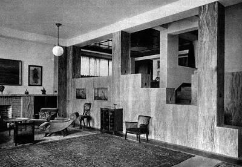
Gli interni di Müller House di Adolf Loos a Praga sono un capolavoro del suo concetto di Raumplan, un design spaziale su più livelli che privilegia la funzionalità e il comfort rispetto all'estetica esterna. In netto contrasto con l'esterno bianco e semplice, gli interni sono ricchi di materiali lussuosi e colori vivaci, creando un rifugio privato e intimo per i suoi abitanti.
Gli elementi chiave degli interni includono:
- Raumplan (piano spaziale): la casa rifiuta le tradizionali divisioni dei piani, presentando invece una sequenza di stanze interconnesse a diverse altezze, determinate dalla loro funzione e importanza simbolica. Brevi rampe di scale collegano gli spazi, consentendo a un osservatore “itinerante” di guardare in diverse aree, creando un'esperienza di vita dinamica e tridimensionale.
- Materiali lussuosi e variegati: Loos ha utilizzato materiali ricchi e naturali per definire ogni spazio, enfatizzandone la consistenza e il calore. Materiali come il marmo verde Cipollino, l'ottone lucido, i pannelli in legno di limone e un tavolo da pranzo in granito sono in primo piano.
- Ricche combinazioni di colori: Contrariamente alle tendenze moderniste dell'epoca, Loos ha utilizzato colori audaci e complementari (verdi, viola, rosa, gialli) nell'arredamento e in specifici trattamenti delle pareti per creare caratteri distintivi per ogni stanza e influenzare l'umore degli occupanti.
- Mobili e nicchie incassati: Il design degli interni incorpora numerosi mobili a incasso, come il divano curvo nel soggiorno e le sedute nel boudoir della signora Müller, creando enclavi intime e definendo la funzione di aree specifiche.
- Gioco di prospettive: la disposizione strategica delle finestre e delle aperture interne consente complesse connessioni visive tra le stanze, come la piccola finestra nel boudoir che si affaccia sul soggiorno come un palco teatrale, gestendo con cura la vista verso l'esterno.
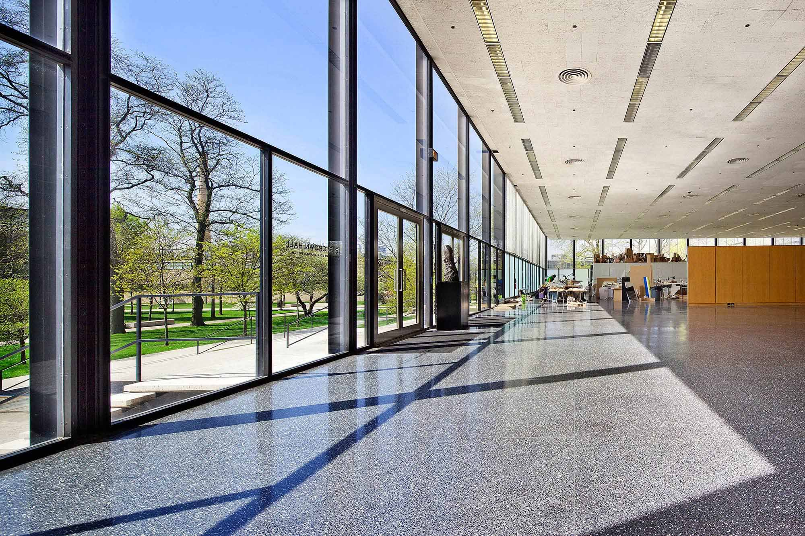
Crown Hall, situata a Chicago, Illinois, è ampiamente considerata il capolavoro architettonico di Ludwig Mies van der Rohe e un'icona del Modernismo del XX secolo. È la sede del College of Architecture dell'Illinois Institute of Technology (IIT) ed è un monumento storico nazionale degli Stati Uniti.
Caratteristiche architettoniche principali
- “Spazio universale”: il piano principale dell'edificio è un unico, vasto spazio privo di colonne. Mies van der Rohe ha realizzato questo “spazio universale”, che può essere adattato a vari usi, sospendendo il tetto a quattro travi esterne in lamiera d'acciaio sostenute da otto colonne esterne a forma di H.
- Estetica dell'acciaio e del vetro: il design incarna perfettamente la filosofia “less is more” di Mies, con una struttura in acciaio a vista e grandi lastre di vetro, che esprimono chiarezza strutturale e semplicità industriale. La trasparenza crea un ambiente aperto, facendo sentire l'interno collegato all'esterno e al paesaggio del campus circostante.
- Influenza sul design: La struttura a campata libera dell'edificio e la facciata in vetro e acciaio hanno influenzato le opere architettoniche successive, tra cui la Neue Nationalgalerie di Berlino.
Storia e significato
Mies Crown Hall Americas Prize (MCHAP): l'edificio è l'omonimo e ospita il MCHAP, un prestigioso premio biennale che riconosce l'eccellenza architettonica nelle Americhe.
Il disegno come costruzione della forma
Il disegno non rappresenta un’idea già formata: la costruisce. Ogni linea tracciata è una decisione, un’ipotesi che guida l’emergere della forma. Il segno grafico non descrive, ma inventa, esplora, mette alla prova. In questa fase, il disegno diventa pensiero visivo in azione, luogo in cui la configurazione prende corpo e si precisa attraverso l’atto stesso del disegnare.
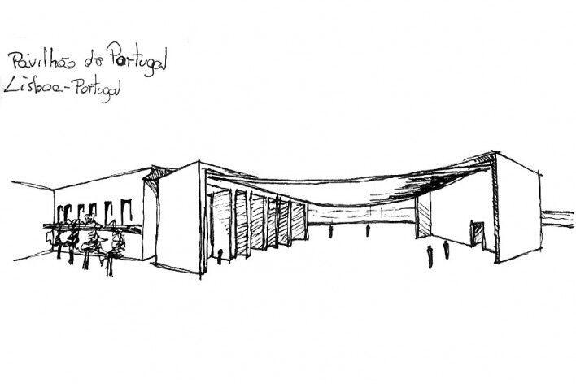
- testano direzioni,
- modulano volumi,
- provano sequenze,
- liberano possibilità.
Gli schizzi di Álvaro Siza per il Padiglione del Portogallo non cercano di rappresentare l’edificio, ma di scoprirne il principio generatore. Le linee leggere e provvisorie non descrivono una forma finita: indagano il comportamento dello spazio, la relazione tra il portico e la grande vela di cemento, il modo in cui il vuoto viene sospeso e reso percettivamente denso. Nei fogli si vede l’architettura nascere come equilibrio tra gravità e leggerezza: non un disegno “che mostra”, ma un disegno “che interroga”. È attraverso questi segni essenziali che Siza mette alla prova la sua intuizione iniziale e ne verifica la necessità.
La critica architettonica elogia la maestria con cui Siza, attraverso i suoi schizzi, riesce a fondere la memoria storica del luogo (il legame di Lisbona con l'oceano, le piazze coperte) con un'invenzione formale radicale, come la grande pensilina sospesa in cemento armato. Gli schizzi non sono solo rappresentazioni, ma "manipolazioni della memoria" che guidano il progetto.
L'immagine iconica della copertura del padiglione, descritta da Siza stesso come un foglio di carta poggiato su due elementi solidi, nasce direttamente dall'immediatezza dei suoi schizzi concettuali. La critica ne sottolinea la capacità di tradurre un'idea poetica e apparentemente semplice in una soluzione ingegneristica complessa e strutturalmente ardita.
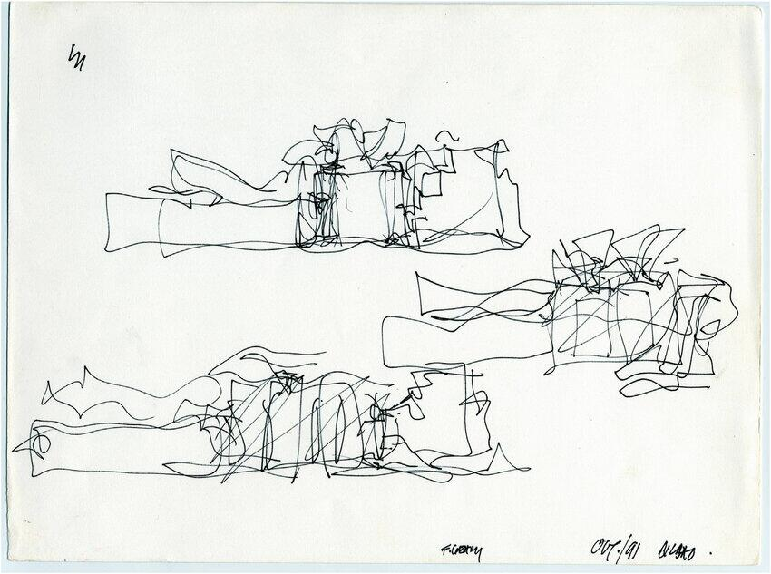
- il segno crea energia,
- la mano anticipa il movimento della forma,
- la complessità nasce dall’immediatezza.
Gli schizzi concettuali di Frank Gehry per il Museo Guggenheim di Bilbao sono noti per le loro linee fluide, gestuali e libere che catturano un senso di movimento spontaneo e scultoreo, che alla fine si è tradotto nel design iconico e sinuoso dell’edificio. L’architetto considera ogni progetto come un “oggetto scultoreo” e i suoi schizzi riflettono questa filosofia, spesso assomigliando a scarabocchi che trasmettono la forma e il flusso complessivi piuttosto che dettagli precisi e rettilinei.
a) Caratteristiche principali degli schizzi
- Fluidità e spontaneità: gli schizzi sono caratterizzati da linee energiche e astratte che ignorano la precisione architettonica tradizionale nella fase iniziale della progettazione, concentrandosi invece sulla cattura di un senso di movimento e volume.
- Attenzione scultorea: il processo di progettazione di Gehry è radicato in un approccio scultoreo. I suoi disegni iniziali e i modelli fatti a mano sono stati fondamentali per immaginare le forme uniche e non rettilinee dell’edificio, che richiamano immagini di pesci, vele gonfiate dal vento o acqua.
- Riferimenti contestuali: gli schizzi incorporano elementi del contesto urbano circostante, come il fiume e i ponti vicini, dimostrando come la forma dell’edificio sia stata concepita per integrarsi e assorbire la sua specifica ubicazione a Bilbao.
- Collegamento alla struttura finale: nonostante la loro natura astratta, gli schizzi preliminari presentano un grado sorprendente di accuratezza rispetto alla silhouette dell’edificio finito, evidenziando la coerenza tra la visione artistica iniziale di Gehry e la creazione architettonica finale.
Il passaggio da questi schizzi fluidi a una struttura costruibile è stato facilitato dall’uso di tecnologie avanzate. Lo studio di Gehry ha adottato il software Computer Aided Three-Dimensional Interactive Application (CATIA), originariamente sviluppato per l’industria aerospaziale. Questo programma ha permesso di tradurre le forme complesse e organiche dei suoi schizzi e modelli fisici in specifiche digitali precise, consentendo l’uso di materiali unici come i pannelli di titanio scintillanti che definiscono l’esterno del museo.
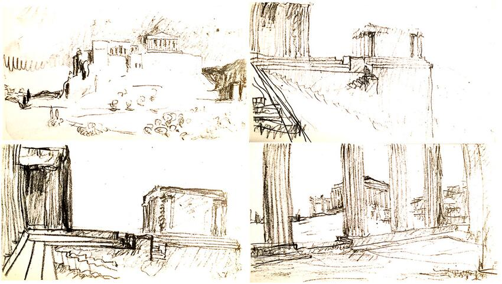
- assi,
- rapporti,
- griglie,
- volumi percepiti,
- vibrazioni di luce.
Gli schizzi realizzati da Le Corbusier nel 1911 durante il suo Voyage d’Orient costituiscono una collezione fondamentale di disegni che documentano i suoi numerosi viaggi in Europa centrale e nel Mediterraneo. Questi schizzi, contenuti in diversi taccuini personali, furono fondamentali per lo sviluppo della sua filosofia architettonica e delle sue opere successive.
a) Panoramica degli schizzi
Gli schizzi del Voyage d’Orient, realizzati quando Le Corbusier era un giovane architetto di nome Charles-Édouard Jeanneret, sono un diario visivo delle sue osservazioni sulle rovine classiche, l’architettura vernacolare, i paesaggi e la vita quotidiana.
Gli aspetti chiave degli schizzi includono:
- Imparare attraverso il disegno: Le Corbusier credeva che “il disegno si imprime nella mente” e utilizzava gli schizzi per indagare attivamente e imparare dai luoghi che visitava, piuttosto che semplicemente documentarli.
- Attenzione alla forma e alla geometria: Gli schizzi mostrano il suo crescente interesse per la semplicità geometrica delle forme architettoniche, in particolare nell’architettura mediterranea e classica, che ha influenzato la sua successiva ricerca di un linguaggio architettonico universale.
- Disegni dell’Acropoli: particolarmente famosi sono i suoi numerosi schizzi dell’Acropoli di Atene, che mostrano il suo fascino per il rapporto tra l’architettura e il terreno e l’esperienza spaziale dinamica del muoversi attraverso il sito.
- Soggetti diversi: oltre ai grandi monumenti, i quaderni contengono disegni di una varietà di soggetti, dagli affreschi interni di una casa a Pompei a un vaso serbo e paesaggi generici.
La configurazione:
quando i segni diventano struttura
Ogni progetto attraversa un momento in cui l’esplorazione diventa struttura. I segni, inizialmente liberi, cominciano a legarsi in una configurazione coerente: emergono allineamenti, campi, equilibri, nuclei spaziali. Non è ancora la forma definitiva, ma una struttura portante. Le immagini mostrano come la configurazione architettonica nasca come sistema di relazioni prima che come figura compiuta.
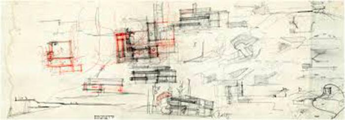
- come i segni iniziali si organizzano,
- come alcuni rapporti persistono e altri cambiano,
- come nasce una configurazione riconoscibile ancora prima che esista una forma definitiva.
Il processo di progettazione della Villa Mairea di Alvar Aalto ha comportato numerosi schizzi e iterazioni progettuali (esistono circa 800 disegni e schizzi in totale), che hanno portato alla realizzazione di una pianta a forma di L che fonde i principi dell’architettura moderna con forme organiche e naturali.
Panoramica della pianta
La pianta finale è organizzata a forma di L, caratteristica del design scandinavo, e contribuisce a definire le aree esterne semi-private e pubbliche, con un prato e una piscina situati nella cavità della “L”.
Le caratteristiche principali della pianta di Villa Mairea includono:
- Spazi fluidi Il piano terra presenta una disposizione fluida e aperta che integra la galleria, il soggiorno e la sala da pranzo. La divisione di questi spazi è definita in modo sottile da elementi come uno schermo di pali di legno (che evoca una foresta finlandese) e sezioni di pareti indipendenti, piuttosto che da pareti solide.
- Elementi organici Aalto ha incorporato una varietà di colonne con forme e texture diverse in tutto l’interno, evitando l’uniformità e rispecchiando la varietà naturale che si trova nella foresta circostante.
- onnessione con la natura La pianta enfatizza la continuità tra l’ambiente interno e quello esterno. Uno schermo ondulato è utilizzato tra le pareti divisorie della biblioteca e il soffitto per filtrare la luce, imitando ulteriormente l’esperienza di trovarsi all’aperto.
- Aree funzionali La casa è stata progettata come una “casa sperimentale” per Harry e Maire Gullichsen, incorporando una sauna, uno studio all’ultimo piano e un giardino d’inverno, riflettendo la richiesta dei clienti di un ambiente in cui Aalto potesse sperimentare liberamente le sue idee di design.
Schizzi di sviluppo
Non sembra essere sopravvissuta una serie completa di disegni originali di Villa Mairea, ma centinaia di schizzi e diagrammi di sviluppo evidenziano il processo di progettazione iterativo di Aalto. Questi schizzi mostrano una progressione da angoli retti più rigidi a un’integrazione più fluida di forme naturali e texture variegate.- Base geometrica Il progetto finale utilizza un sistema di griglia sottostante, ma gli elementi che si discostano dalle linee ortogonali, come gli angoli dei portici o una piscina curva, sono allineati con le diagonali tra i nodi della griglia, dimostrando una composizione accurata e pittorica piuttosto che un design arbitrario e libero.
- Influenze Gli schizzi e i diagrammi aiutano a illustrare le numerose influenze incorporate da Aalto, tra cui l’architettura giapponese, le tradizionali fattorie finlandesi (tupa) e il lavoro di architetti come Frank Lloyd Wright.
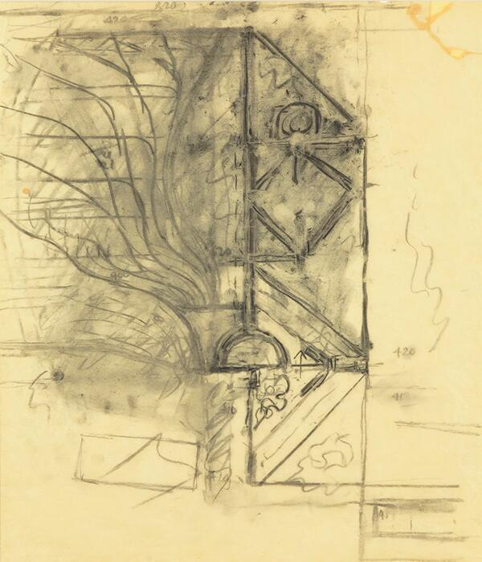
- la configurazione emerge come coppia di corti parallele,
- la simmetria non è un dogma ma una necessità percettiva,
- la geometria è ancora incerta,
- ma il campo di forze è già chiarissimo.
I primi schizzi di Louis Kahn per il Salk Institute rivelano un processo di progettazione in continua evoluzione, che passa dalle idee iniziali ispirate ai monasteri e a un cortile con giardino alla piazza simmetrica iconica finale con due ali di laboratori che costituiscono una “facciata verso il cielo”. Tra gli elementi chiave figuravano i progetti per un “luogo di incontro” e dormitori che non furono mai realizzati.
Caratteristiche principali dei progetti iniziali rispetto al progetto finale
Il processo di progettazione di Kahn ha comportato diverse trasformazioni importanti, con gli schizzi che fungevano da metodo di riflessione e scoperta architettonica.
- Programma originale: Il progetto iniziale per il Salk Institute comprendeva tre componenti principali: laboratori, una sala riunioni e dormitori per i docenti in visita. Alla fine sono stati realizzati solo i laboratori.
- Il cortile (giardino vs. piazza):
- Primi schizzi: mostravano un cortile centrale pieno di vari alberi, come i pioppi, per creare un’atmosfera mediterranea. Kahn ha lottato con questo concetto man mano che la costruzione procedeva.
- Progetto finale: sulla base del consiglio dell’architetto messicano Luis Barragán, Kahn ha optato per una piazza spoglia e aperta senza vegetazione, con uno stretto canale d’acqua che scorre verso l’Oceano Pacifico. Il suggerimento di Barragán era di “non aggiungere nemmeno una foglia” e di creare invece “un’altra facciata verso il cielo”. La piazza in travertino che ne è risultata, divisa in due dal corso d’acqua, offre una vista mozzafiato che unifica le due ali del laboratorio e sottolinea l’orizzonte dell’oceano.
- Il “luogo di incontro” (non realizzato): Kahn si interessò profondamente alla progettazione di un luogo di incontro separato, che considerava il “cervello” dei “polmoni” dei laboratori. Questa struttura, destinata a favorire l’interazione sociale e intellettuale, fu progettata meticolosamente, ma alla fine non fu realizzata per mancanza di fondi. I disegni di questa struttura non realizzata evidenziano l’esplorazione di Kahn della geometria e della trasformazione nel design.
- Struttura del laboratorio: I primi schizzi e disegni sperimentavano diverse soluzioni strutturali. Una versione esplorava l’uso di piastre piegate per i piani di servizio interstiziali a campata lunga, una soluzione successivamente abbandonata a favore delle travature Vierendeel che consentivano di ottenere spazi di laboratorio ampi, aperti e senza ostacoli, adattabili alle mutevoli esigenze della scienza.
- Estetica e influenza: Gli schizzi e i progetti di Kahn rivelano il suo desiderio di creare uno spazio monumentale e spirituale, traendo ispirazione dai monasteri medievali e dall’architettura romana antica. L’uso del cemento pozzolanico e del legno di teak nella struttura finale è stato attentamente studiato per completarsi a vicenda e fornire un aspetto senza tempo.
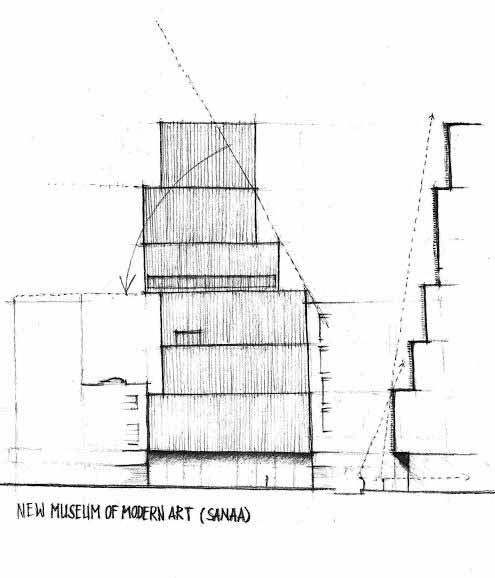
- blocchi sovrapposti e sfalsati,
- una configurazione che nasce dalla luce e dalla direzione,
- un equilibrio instabile ma coerente,
- una struttura che, una volta comparsa, non può più essere diversa.
Il progetto di SANAA per il New Museum di New York è nato da un lungo processo che ha comportato studi di volumetria fisica utilizzando materiali semplici ed effimeri come carta e cartone. Questi primi modelli hanno esplorato il concetto di impilamento e spostamento di volumi rettilinei, spesso denominati “scatole bento”, attorno a un nucleo centrale per ovviare ai vincoli del sito e creare spazi interni variegati.
a) Processo di progettazione e studi sui modelli
- Approccio fisico iniziale: SANAA ha iniziato il proprio flusso di lavoro con la modellazione fisica per affrontare questioni fondamentali quali la scala, la forma e il modo in cui l’edificio si sarebbe relazionato con il contesto urbano.
- Concetto delle “scatole impilate”: l’idea centrale consisteva nel prendere l’intera superficie edificabile e dividerla in sette scatole di dimensioni diverse, che sono state poi impilate e spostate fuori asse. Ciò ha creato degli spazi deliberati tra i piani, consentendo alla luce naturale di entrare dai lati e variando l’altezza dei soffitti negli spazi della galleria privi di colonne.
- Materiali effimeri: i modelli di lavoro erano tipicamente realizzati con materiali temporanei facilmente reperibili, come cartone e carta, completi di segni a matita e appunti. Ciò ha consentito un processo fluido e sperimentale, registrando domande e potenziali errori lungo il percorso.
- Documentazione fotografica: l’architetto Thomas Demand ha documentato questi e altri modelli effimeri nell’ufficio di SANAA come parte della sua serie “Model Studies”, evidenziandone la natura temporanea e la qualità grezza e sperimentale.
- Piante variabili: lo spostamento dei volumi ha fatto sì che ogni piano avesse una configurazione e un rapporto con l’esterno unici, evitando il tipico schema omogeneo dei grattacieli.
- Nucleo centrale: la struttura dell’edificio è sostenuta da un unico nucleo centrale in acciaio che ospita i servizi e la circolazione, consentendo agli spazi della galleria che lo circondano di rimanere aperti e flessibili.
- Sviluppo della facciata: i primi modelli di volumetria si concentravano sulla forma; i modelli successivi e i campioni di materiali sono stati utilizzati per determinare il trattamento finale della facciata con una rete di alluminio espanso, che funge da rivestimento sfumato e semitrasparente sulle pareti bianche, conferendo all’edificio apparentemente “massiccio” un aspetto leggero.
Verificare la coerenza:
la composizione messa alla prova
La composizione non è una somma di parti, ma un sistema di relazioni in cerca di coerenza. Rappresentarla con strumenti diversi – pianta, sezione, modello – significa interrogarla criticamente. Ogni cambio di scala o di mezzo svela fragilità, conferme o nuove tensioni. La forma non si dichiara, si costruisce nel confronto con i suoi strumenti: è un processo di verifica più che di affermazione.

- piante modulari,
- schizzi atmosferici,
- modelli massivi in legno e pietra.
Il progetto di Peter Zumthor per le Therme Vals è stato guidato dall’idea di creare una struttura simile a una grotta o a una cava incastonata nel fianco della collina, utilizzando la pietra quarzite di Vals locale come fonte di ispirazione e materiale principale. Il suo processo di progettazione iniziale si è basato in gran parte su modelli fisici e schizzi disegnati a mano per esplorare l’atmosfera spaziale e l’integrazione con il paesaggio.
Schizzi concettuali e progetti
Le idee iniziali di Zumthor enfatizzavano un’architettura che non si imponesse sul paesaggio, ma che piuttosto emergesse da esso come un evento naturale. I primi schizzi si concentravano sul rapporto tra la forma costruita e la topografia naturale, spesso riducendo la sezione trasversale della struttura a elementi chiave come l’ingresso del tunnel buio, la galleria rialzata “a sporgenza di pietra” (Felsband) e l’apertura alla luce.
- Schizzi I suoi schizzi hanno spesso un carattere grezzo ed espressivo, utilizzando carboncino o matita per esplorare la luce, l’ombra e la consistenza dei materiali, nonché il modo in cui i visitatori interagirebbero con le varie strutture.
- Piani Le planimetrie citano spesso i dipinti di Mondrian nella loro composizione a griglia, basata su un sistema di blocchi e vuoti. Questi piani evidenziano la composizione non sequenziale e labirintica dei santuari interni e il modo in cui le diverse aree rispondono al calore o alla calma.
- Materialità I modelli sono stati utilizzati per esplorare come le 60.000 lastre di quarzite locale sarebbero state disposte in modo stratificato e intrecciato, creando un aspetto monolitico ma strutturato.
- Forma e massa I modelli rappresentavano spesso l’edificio come una serie di 15 unità distinte (ciascuna alta circa 5 metri) con soffitti in cemento a sbalzo, seminterrate nel fianco della collina con un tetto in erba. Questo concetto di “campo di blocchi” è stato uno strumento organizzativo fondamentale.
- Luce e acqua I modelli hanno anche aiutato a studiare come la luce naturale sarebbe entrata nei vari spazi interni attraverso stretti tagli nel soffitto e nella facciata e come gli elementi acquatici avrebbero interagito con la pietra e il cemento.
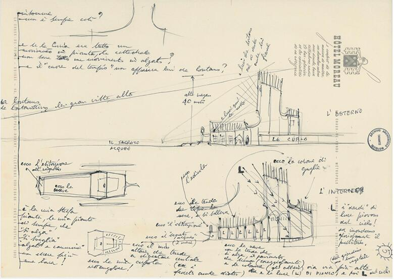
- piante schematiche,
- sezioni che estremizzano la luce,
- silhouettes volumetriche,
- modelli di verifica.
Il progetto di Gio Ponti per la Concattedrale Gran Madre di Dio di Taranto si è evoluto attraverso un processo complesso che ha coinvolto tre distinti progetti primari: “il Tempio”, “la Navata” e il progetto finale, “la Vela”. Questa evoluzione è stata guidata dalla sua visione di uno spazio sacro moderno, leggero e arioso, che fosse una testimonianza concreta delle riforme del Concilio Vaticano II.
L’evoluzione del progetto
Nel 1964 Ponti fu incaricato dall’arcivescovo Guglielmo Motolese di progettare una nuova cattedrale per la città di Taranto, in espansione. Il processo di progettazione ha coinvolto numerose idee e soluzioni intermedie prima che fosse definita la forma finale e iconica.
- Progetto 1: Il Tempio Il concetto iniziale si ispirava alle chiese tradizionali milanesi e presentava una pianta ottagonale con una facciata bipartita. Questo progetto rifletteva un’architettura ecclesiastica più convenzionale, ma non soddisfaceva pienamente il desiderio di Ponti di un’espressione innovativa e moderna della fede e della nuova direzione della Chiesa.
- Progetto 2: La navata La fase successiva di sviluppo ha visto la cattedrale ripensata come una “navata” (nave) con una grande “camera di luce” rettangolare. Questo progetto incorporava la caratteristica attenzione di Ponti per la luce e la smaterializzazione delle facciate. La “camera di luce” aveva lo scopo di catturare e filtrare la luce, rendendo la struttura leggera ed eterea.
- Progetto 3: La Vela Il progetto finale realizzato si è evoluto dal concetto di ‘Nave’, sostituendo la “camera di luce” con l’iconica e suggestiva “vela” perforata. Questa struttura alta 40 metri, simile a una vela, composta da due pareti di cemento con intagli geometrici, collega il cielo e la terra e funge da campanile senza campane.
- Il design della vela era un chiaro riferimento alla posizione marittima di Taranto sul Mar Mediterraneo.
- Ponti immaginava la struttura riflessa nei tre specchi d’acqua davanti all’edificio, rafforzando la metafora della “nave”.
- L’uso di fori geometrici ha permesso alla luce di filtrare all’interno, creando un dinamico gioco di luci e ombre.

- diagrammi circolari,
- piante fluidissime,
- modelli bianchi di controllo,
- assonometrie concettuali.
Il Museo d’Arte Contemporanea del XXI Secolo di Kanazawa, progettato da SANAA, è concepito come un “parco” pubblico circolare che integra il museo nella città piuttosto che ergersi come un’istituzione imponente. Il suo design si concentra sulla trasparenza, sul flusso orizzontale e su una disposizione non gerarchica, ottenuta attraverso una disposizione unica di forme e spazi.
Concetto architettonico e progetti
L’idea architettonica centrale si basa su un grande cerchio di vetro a basso profilo (112,5 metri di diametro) all’interno del quale sono disposti vari spazi espositivi a forma di scatola e cilindrici.
- Circolazione come spazio urbano: lo spazio tra le “scatole” interne della galleria e la parete esterna in vetro forma un’area di circolazione fluida, progettata per dare la sensazione di una strada cittadina o di un’estensione del parco circostante. Quest’area è accessibile al pubblico senza biglietto, sfumando il confine tra zone pubbliche e private.
- Ingressi multipli: la forma circolare e la facciata in vetro, senza un unico ingresso principale, incoraggiano l’accesso da tutte le direzioni, simboleggiando un museo aperto a tutti.
- Diversità delle gallerie: le sale espositive variano per forma, dimensioni (altezze da 4 m a 12 m) e condizioni di illuminazione (da luce naturale intensa a spazi bui), offrendo esperienze diverse per l’arte.
- Trasparenza e luce: l’ampio uso di pareti in vetro, sia sul perimetro che per le partizioni interne, fornisce luminosità e collegamenti visivi, consentendo ai visitatori di essere consapevoli della presenza degli altri all’interno e all’esterno dell’edificio. Quattro cortili interni portano inoltre la luce naturale in profondità all’interno.
I diagrammi architettonici del museo illustrano il quadro concettuale, spesso utilizzando forme geometriche semplici per mostrare la relazione tra gli elementi dell’edificio:
- Diagrammi a bolle/funzionali: questi diagrammi mostrano spesso un grande cerchio trasparente che racchiude varie forme solide più piccole che rappresentano funzioni specifiche come gallerie, una biblioteca, una sala conferenze e un laboratorio per bambini.
- Piani di circolazione: questi evidenziano i percorsi non lineari e flessibili che i visitatori possono seguire, in contrasto con la tradizionale esperienza museale lineare.
- Diagrammi in sezione trasversale: illustrano le diverse altezze dei soffitti e la relazione tra il piano terra e i livelli seminterrati, mostrando in particolare come l’installazione “Leandro’s Swimming Pool” possa essere vissuta su due livelli diversi.
La soglia come condizione percettiva:
passaggio, differenza, trasformazione
La forma non è soltanto una configurazione visiva: è un’azione. Costruisce orientamenti, dirige il corpo, produce ritmo e percezione. Agisce sullo spazio e su chi lo attraversa. Le immagini scelte non mostrano “oggetti architettonici”, ma situazioni in cui la forma induce esperienze, modula l’intensità del luogo e genera significati attraverso il movimento e la relazione.
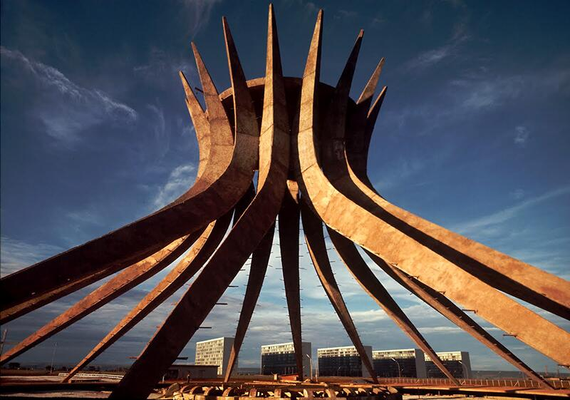
- le curve non sono “forma”: sono direzione,
- la luce non “illumina”: orienta,
- il ritmo delle nervature induce movimento,
- il vuoto centrale attira il corpo verso il centro.
L'interno della Cattedrale di Brasilia, progettata da Oscar Niemeyer, è uno spazio luminoso e circolare caratterizzato da imponenti vetrate colorate, sculture di angeli sospese e un accesso al piano inferiore che conduce alla cupola principale, inondata di luce.
Caratteristiche architettoniche
- Struttura e luce: anziché l'interno buio e austero tipico delle cattedrali più antiche, l'interno è inondato dalla luce che filtra attraverso grandi pannelli di vetrate blu, verdi e bianche progettate dall'artista Marianne Peretti. Le sedici colonne curve in cemento (ognuna del peso di 90 tonnellate) formano una struttura iperboloide che guida lo sguardo verso l'alto, verso il soffitto.
- Ingresso: i visitatori entrano attraverso un tunnel buio, creando una “promenade architecturale” dove le loro pupille si dilatano nell'oscurità, aumentando l'impatto della cupola brillante e luminosa quando emergono nello spazio principale della cattedrale.
- Arte e scultura: l'interno presenta un arredamento minimalista e diverse opere d'arte degne di nota, tra cui tre grandi sculture di angeli sospese al soffitto con cavi d'acciaio, che sottolineano lo scopo sereno e contemplativo dell'edificio.
- Simbolismo: la struttura in cemento è stata descritta come rappresentazione di due mani che si muovono verso il cielo o di una corona di spine, elemento chiave della visione di Niemeyer di uno spazio di profonda espressione religiosa e purezza.
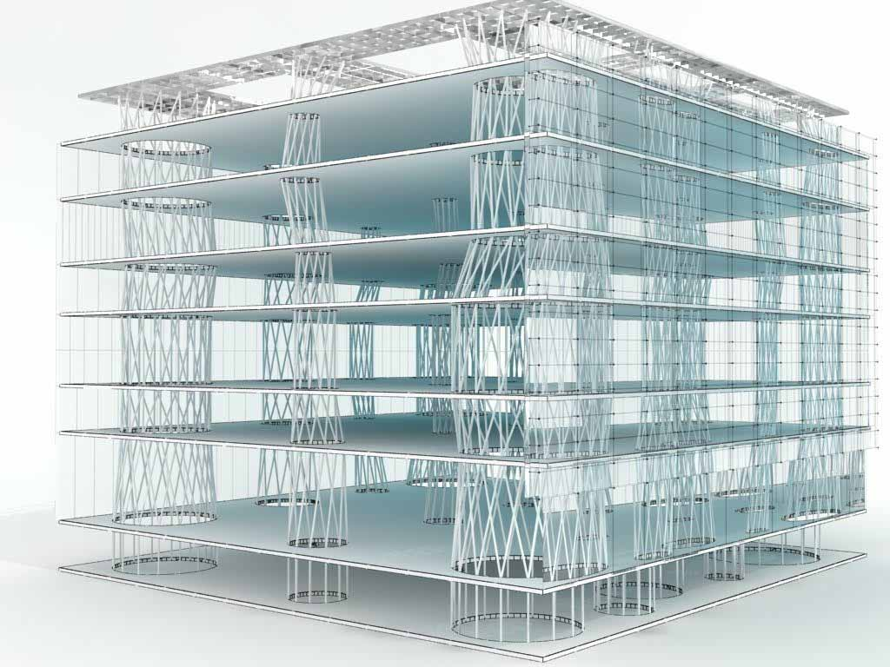
- i tubi verticali diventano campi di luce,
- definiscono direzioni di attraversamento,
- creano un ritmo che organizza i piani,
- trasformano lo spazio in un “campo di forze” percepibile.
L’interno della Toyo Ito Sendai Mediatheque è caratterizzato da 13 grandi “tubi” verticali in acciaio a traliccio che penetrano sette lastre sottili e piatte, creando uno spazio aperto, fluido e altamente flessibile. Questi tubi fungono contemporaneamente da supporti strutturali primari dell’edificio e da condotti per la circolazione verticale e i servizi.
Design e funzione dei tubi interni I tubi sono la caratteristica architettonica più sorprendente dell’edificio e sono stati ispirati dalle forme naturali, in particolare dal movimento organico e ondeggiante delle alghe. Le loro caratteristiche interne includono:
- Supporto strutturale: i tubi, che variano in diametro da 7 a 30 pollici, sono costruiti con tubi di acciaio a pareti spesse. Quattro dei tubi più grandi sono situati agli angoli dell’edificio e sono progettati per resistere ai carichi laterali, come quelli causati dai terremoti e dal vento, consentendo agli altri di essere più flessibili.
- Circolazione verticale: cinque dei nove tubi più piccoli ospitano gli ascensori, mentre gli altri contengono le scale, creando chiari percorsi verticali attraverso i piani aperti.
- Condotti di servizio: fungono da pozzi per le infrastrutture dell’edificio, compresi i cavi elettrici, i condotti e il flusso d’aria e di luce. I sistemi HVAC utilizzano i tubi per distribuire l’aria in tutto l’edificio, con i tubi che funzionano come cattura-vento per aspirare l’aria naturale.
- Estetica e atmosfera: la disposizione irregolare dei tubi, simile a quella degli alberi, crea un senso di spazio aperto e non predeterminato, consentendo movimenti senza vincoli e viste panoramiche tra i piani. La facciata in vetro trasparente, combinata con la natura aperta dei tubi e delle piastre del pavimento, inonda l’interno di luce naturale e sfuma i confini tra l’interno e il paesaggio urbano circostante.
Disposizione interna
Ciascuna delle sette piastre del pavimento ospita funzioni diverse, con un numero minimo di pareti permanenti per consentire la massima flessibilità e adattabilità nel tempo. L’edificio ospita vari servizi pubblici, tra cui:- Piano terra: Atrio d’ingresso a doppia altezza con piazza aperta, caffetteria, negozio al dettaglio e spazio comunitario.
- Secondo piano: Biblioteca per bambini, biblioteca audiovisiva e uffici amministrativi.
- Terzo e quarto piano: aree di consultazione della biblioteca principale con accesso a Internet e arredi specializzati.
- Quinto e sesto piano: gallerie d’arte e spazi espositivi.
- Settimo piano: un cinema e una mostra permanente sul grande terremoto e tsunami del 2011 nel Giappone orientale.
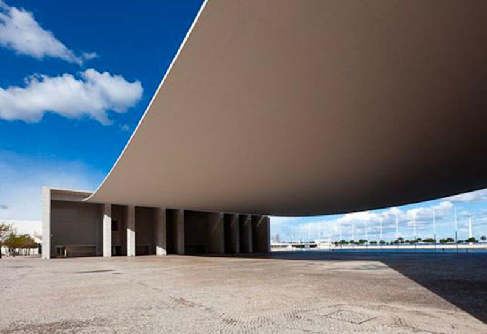
- non è un oggetto,
- è una forza che tirando da due lati genera un comportamento:
- gravità,
- flessione percettiva,
- tensione,
- campo aperto e controllato.
La copertura del Padiglione portoghese progettato da Álvaro Siza per l’Expo ’98 è un elemento architettonico iconico che appare come un sottile e leggerissimo foglio di cemento drappeggiato tra due imponenti pilastri.
Dettagli architettonici
- Ispirazione progettuale: Siza Vieira ha descritto il progetto come ispirato a un “foglio di carta posto tra due mattoni”.
- Struttura: l’immensa copertura è costituita da una lastra di cemento armato incredibilmente sottile, con uno spessore di soli 20 centimetri in alcuni punti, ma che si estende per ben 70 metri.
- Effetto: la leggera curvatura di tre metri della copertura e il modo in cui è collegata alle strutture di sostegno con cavi d’acciaio a vista creano l’impressione visiva di una tenda in tessuto, offrendo una piazza pubblica coperta e priva di colonne.
- Funzione: quest’area coperta è stata utilizzata come sede di cerimonie ed eventi pubblici durante l’Esposizione Universale e continua ad essere oggi un importante punto di riferimento architettonico nel quartiere Parque das Nações di Lisbona.